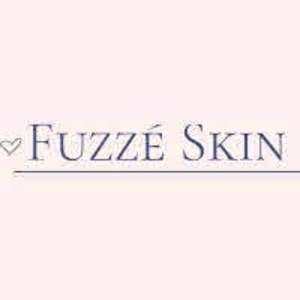

Trade Mark Journal No.2025/009 28 February 2025
UK00004150460 21 January 2025 (3,5)

- Class 3
- Body scrub; Exfoliating body scrub; Body scrubs; Exfoliating scrubs for the body; Body wash; Body lotion; Cosmetic body scrubs; Body scrubs [cosmetic]; Body washes; Body mask lotion; Body soap; Body moisturisers; Hair and body wash; Body lotions; Body polish; Moisture body lotion; Body cleansing foams; Body and facial butters; Body and facial oils; Body oils; Body butters; Face and body lotions; Body spray; Face scrub; Body shampoos; Toning lotion, for the face, body and hands; Body massage oils; Moisturizing body lotions; Body sprays; Cosmetic body mud; Body deodorants; Scented body lotions; Body mist; Lotions for face and body care; Body oil; Scented body spray; Body creams; Body butter; Moisturising body lotion [cosmetic]; Body powder; Body masks; Deodorants for body care; Body cream; Non-medicated body soaks; Body cream soap; Body mask powder; Body oils [for cosmetic use]; Scented body creams; Gel scrub; Body mask cream; Body oil spray; Body fragrances; Face and body creams; Make-up for the face and body; Soaps for body care; Body splash; Exfoliating scrubs for the hands; Body glitter; Body gels; Body oil [for cosmetic use]; Exfoliating scrubs for the face; Face and body glitter; Exfoliating scrubs for the feet; Hand and body butter; Body soufflé; Body paint (cosmetic); Body sprays [non-medicated]; Body milk; Skin cleansing lotion; Body and facial gels [cosmetics]; Face and body masks; Body emulsions; Scented body lotions and creams; Body and facial creams [cosmetics]; Cakes of soap for body washing; Body powder (Non-medicated -); Body milks; Perfumed body lotions [toilet preparations]; Wax strips for removing body hair; Facial scrubs; Soap free washing emulsions for the body; Body care cosmetics; Make-up preparations for the face and body; Body firming creams; Beauty creams for body care; Creams (Non-medicated -) for the body; Sparkling fluid for the body; Body cream for cosmetic use; Body glitters; Body creams [cosmetics]; Exfoliants for the cleansing of the skin; Body gels [cosmetics]; Pumice stones for use on the body; Baby body milks; Body talcum powder; Body deodorants [perfumery]; Skin lotion; Body emulsions for cosmetic use; Cosmetic preparations for the hair and scalp; Cleansers for intimate personal hygiene purposes, non medicated; Vaginal washes for personal sanitary or deodorant purposes; Suntan lotion [cosmetics]; Shaving lotion; Bath lotion; Facial lotion; Sun tan lotion; Suntan lotions; Sunscreen lotions; Moisturising creams, lotions and gels; Moisturising skin lotions [cosmetic]; Skin moisturizer; Skin lotions; Lotions for the skin; After-sun lotions; Moisturizing creams; Moist paper hand towels impregnated with a cosmetic lotion; After-shave lotions; Aftershave lotions; Mattifying gel cream; Cosmetic suntan lotions; Day lotion; Hand lotion (Non-medicated -); Sunscreen cream; Cosmetic sun milk lotions; Shaving lotions; Sunscreen creams; Suntan creams; Non-medicated skin clarifying lotions; Suntan creams [self-tanning creams]; Cosmetic patches containing sunscreen and sun block for use on the skin; Moisturising skin creams [cosmetic]; Oils for moisturising the skin after sunbathing; After-sun lotions [for cosmetic use]; Skin moisturizer masks; Massage oils and lotions; Exfoliating creams; Moisturising creams; Bathing lotions; Skin moisturiser; Cosmetic creams for dry skin; Sun-block lotions; Non-medicated skin lotions; Depilatory lotions; Sunscreen creams [for cosmetic use]; Wipes impregnated with a skin cleanser; Cosmetic creams and lotions; Pre-shave creams; Suncare lotions; Sun-tanning creams and lotions; Wave-set lotions; Facial lotions; Suntan oils [cosmetics]; Skin moisturizers; After-shave creams; Moisturiser; Blemish balm creams; Creams for tanning the skin; Skin cream; After-sun creams; Skin cleansing cream; Skin cleansing cream [non-medicated]; Aftershave creams; Cleansing lotions; Skin moisturizers used as cosmetics; After-sun oils [cosmetics]; Milky lotions for skin care; Make-up removing lotions; After shave lotions; Exfoliant creams; Hydrating creams for cosmetic use; Pre-shaving lotions; Skin creams; Creams for the skin; Lavender gel; Skin cream [for cosmetic use]; Creams (Soap -) for use in washing; Hair lotions; Tissues impregnated with cosmetic lotions; Cuticle cream; Aromatherapy lotions; Cosmetic hair lotions; Non-medicated stimulating lotions for the skin; Skin masks; Skin masks [cosmetics]; Clay skin masks; Foot masks for skin care; Skin make-up; Hand masks for skin care; Facial masks; Pores tightening mask packs used as cosmetics; Skin cleansers; Hair masks; Skin moisturisers; Face masks; Skin lighteners; Skin toner; Cosmetic facial masks; Facial masks [cosmetic]; Hydrating masks; Cosmetics for use in the treatment of wrinkled skin; Cream for whitening the skin; Whitening the skin (Cream for -); Non-medicated skin serums; Facial beauty masks; Cosmetics for protecting the skin from sunburn; Hair care masks; Skin relief serum [cosmetic]; Skin soap; Skin cleansers [cosmetic]; Gel eye masks; Tissues impregnated with a skin cleanser; Skin toners; Skin whitening creams; Creams (Skin whitening -); Colour cosmetics for the skin; Oils for the skin; Cosmetic creams for the skin; Skin creams [cosmetic]; Skin creams [for cosmetic use]; Skin toners [cosmetic]; Exfoliants for the care of the skin; Cleansing masks; Cosmetics for the treatment of dry skin; Skin cleansing foams; Skin cleansers [non-medicated]; Skin care mousse; Skin balms [cosmetic]; Cosmetic masks; Cosmetic mud masks; Creams for firming the skin; Skin care cosmetics; Skin care oils [cosmetic]; Skin recovery creams [cosmetics]; Cosmetics for use on the skin; Beauty masks for hands; Beauty masks; Masks (Beauty -); Epilating waxes; Depilatory waxes; Massage waxes; Wax (Depilatory -); Depilatory wax; Polishing wax; Wax (Polishing -); Wax treatments for the hair; Hair styling waxes; Eyebrow styling wax; Hair wax; Wax stripping preparations; Preparations for stripping wax from floors; Waxes for leather; Mustache wax; Laundry wax; Wax (Laundry -); Moustache wax; Wax (Moustache -); Prepared wax for polishing; Hair removal and shaving preparations; Depilatories; Depilatory creams; Wax melts [fragrancing preparations]; Shaving balms; Hair desiccating treatments for cosmetic use; Cosmetic massage creams; Cosmetic preparations for nail drying; Polish; Nail polish; Nail polish remover; Chrome polish; Nail polish removers; Nail polish pens; Nail polish remover pens; Nail polish removers [cosmetics]; Nail polish base coat; Nail polish top coat; Nail polishing powder; Nail varnish remover [cosmetics]; Nail glitter; Nail varnish; Nail varnish removers; Nail paint [cosmetics]; Nail enamel remover; Nail base coat [cosmetics]; Nail primer [cosmetics]; Nail makeup; Gel nail removers; Nail cosmetics; Nail-polish removers; Nail gel; Lip polisher; Nail enamel; Nail cream; Nail whiteners; Nail tips [cosmetics]; Glitter in spray form for use as a cosmetics.
- Class 5
- Patches impregnated with acne treatment preparations; Adhesive skin patches for medical use; Skin patches for the transdermal delivery of pharmaceuticals; Corn and callus creams; Skin relief serum [medicated].
NICOLETA TUICAN